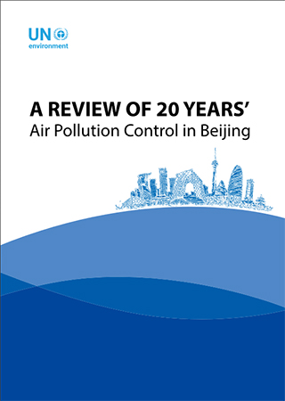
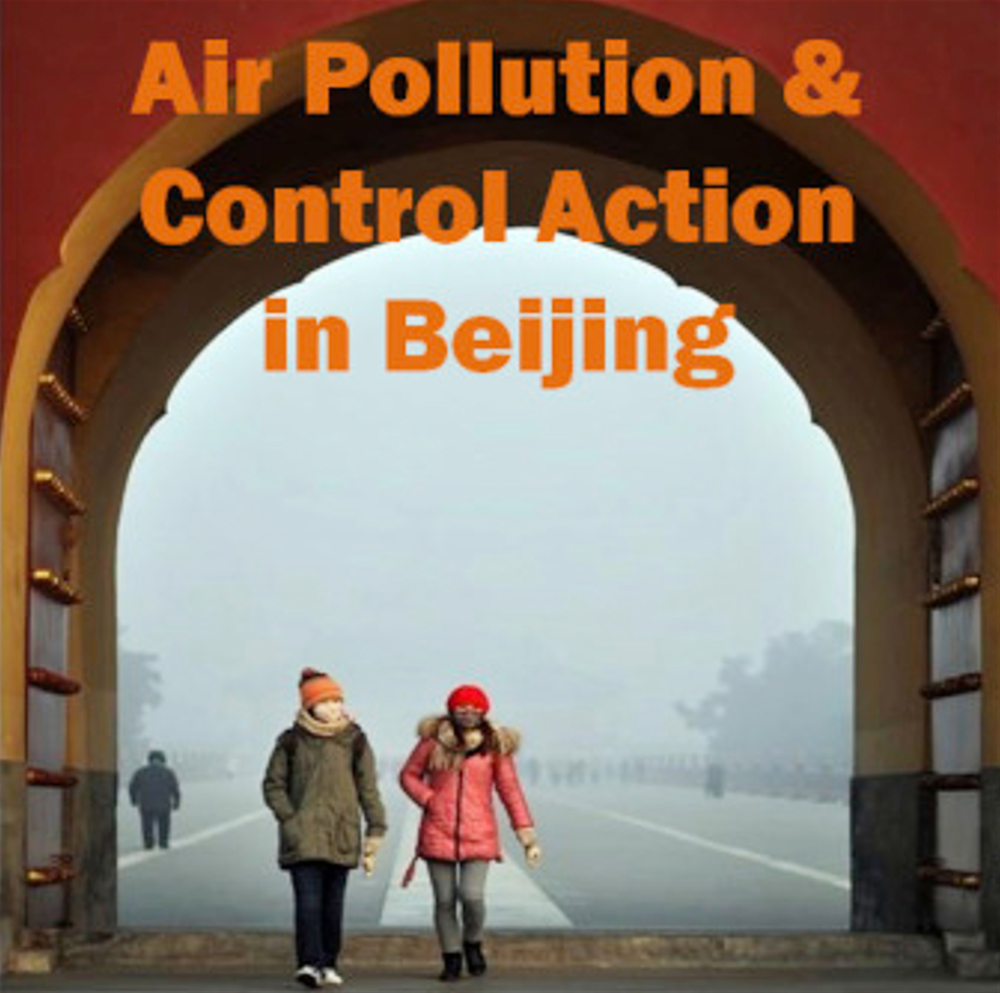
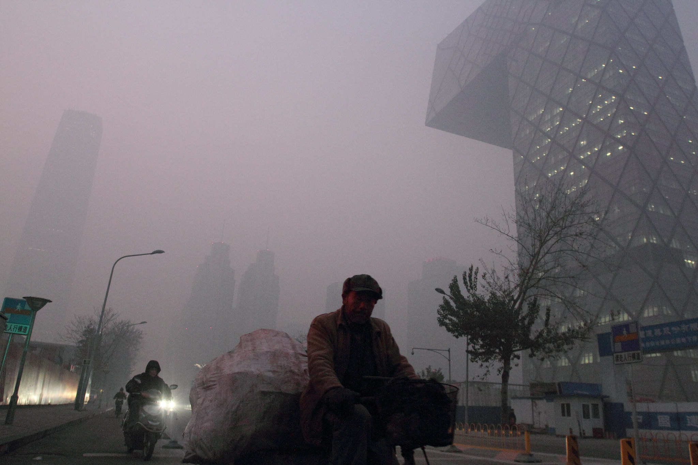
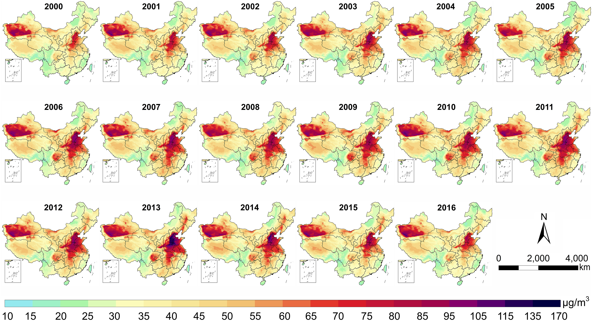
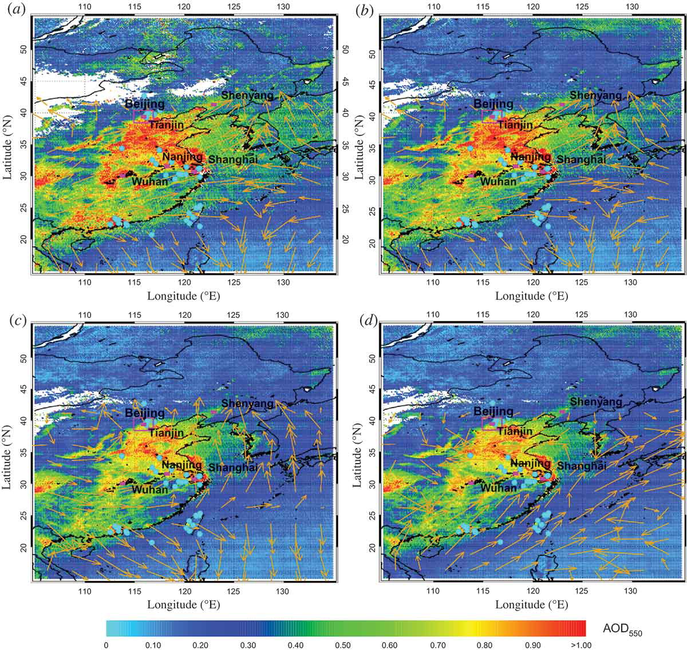
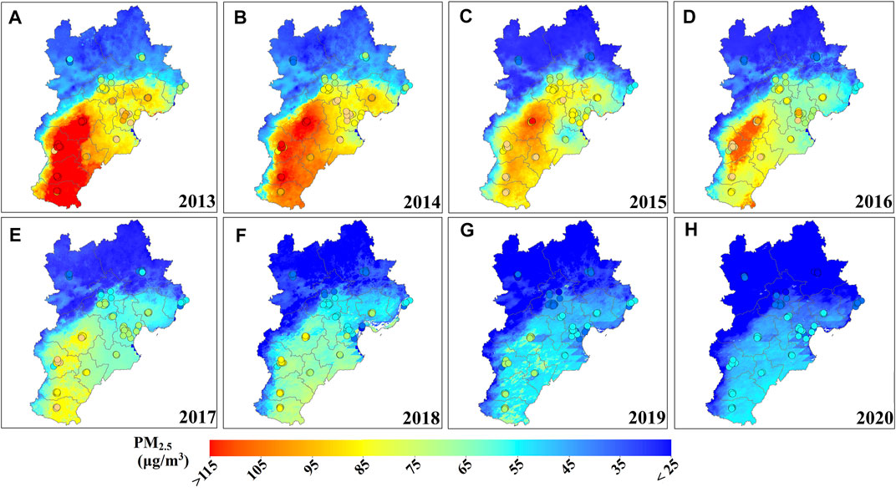

4 Week 4 - Air Pollution & Control Action in Beijing
4.1 Summary
My city of choice is Beijing, the capital of China. Beijing is one of the most polluted cities in the world (Maji & Lam, 2020). And its air quality improvements are a model for other cities.
2019, a new report by the United Nations Environment Programme (UN Environment) and the Beijing Municipal Ecology and Environment Bureau (BEE) outlines how Beijing’s air quality management programme has evolved over the past quarter century, called “A Review of 20 Years’ of Air Pollution Control in Beijing”.

In 1998 Beijing declared war on air pollution, the challenge was to find ways to improve air quality in one of the largest and fastest growing cities in the developing world. 20 years on and it appears that Beijing is winning the battle. Air quality has improved substantially, and the lessons learned provide a roadmap for other cities tackling air pollution.
“This improvement in air quality didn’t happen by accident. It was the result of an enormous investment of time, resources and political will,” said Joyce Msuya, Acting Executive Director of UN Environment. “Understanding Beijing’s air pollution story is crucial for any nation, district or municipality that wishes to follow a similar path.”
4.2 Background
With rapid urbanization and industrialization over the past thirty years, China has become one of the few countries in the world with the most severe air pollution. According to 2015 Global Burden of Disease study, PM2.5 was globally ranked as the fifth mortality risk factor, responsible for about 4.2 million deaths and 103.1 million years of life lost or lived with disability (Duke University, 2020). The impact of air pollution on atmospheric visibility, human health, and global climate change has garnered widespread public concern.

In response to these challenges, the Beijing Municipal Government (BMG) has implemented a series of control policies, laws, and regulations since 1998, with a focus on controlling SO2 and Total Suspended Particulates (TSP). However, severe haze weather still occurs, especially during the heating season (autumn and winter) (Li et al., 2020). Particularly in January 2013, severe haze enveloped Beijing and the North China region, affecting over 800 million people (Liu et al., 2020).
Since then, starting in 2013, China has initiated unprecedented air quality improvement actions nationwide, especially targeting the management of fine particulate matter (PM2.5) pollution. The State Council of China issued the “Air Pollution Prevention and Control Action Plan” (APPCAP) on September 10, 2013, marking the first time China adopted a targeted national strategy aimed at improving air quality and set clear quantitative goals, such as requiring Beijing to control PM2.5 concentration to below 60μg/m³ by 2017. To achieve this goal, the Beijing Municipal Government followed up with the “Beijing 2013-2017 Clean Air Action Plan” (Clean Air Action), implementing a series of stringent control measures.

However, the winter of 2016 still saw frequent heavy pollution days. To meet the five-year target, the “2017-2018 Autumn and Winter Comprehensive Air Pollution Control Action Plan for the Beijing-Tianjin-Hebei Region” (hereinafter referred to as the “Comprehensive Action”) was subsequently implemented in the autumn of 2017. Finally, by the end of 2017, Beijing’s annual average PM2.5 concentration successfully dropped to 58μg/m³, achieving the five-year goal of the Clean Air Action.
The journey towards cleaner air continued with the introduction of the three-year Blue Sky Defense Plan spanning from 2018 to 2020. This subsequent phase of environmental policy and action further accelerated improvements in air quality across Beijing, with PM2.5 annual average concentrations witnessing a steady decline to 42μg/m³ by 2019. Such progress is indicative of Beijing’s ongoing commitment to enhancing its air quality, marking significant strides in the city’s environmental health landscape (Li et al., 2020).

Beijing’s air quality management efforts are closely aligned with the United Nations Sustainable Development Goals (SDGs), specifically Goal 11 (to make cities and human settlements inclusive, safe, resilient, and sustainable) and Goal 13 (to take urgent action to combat climate change and its impacts). By improving air quality, Beijing not only enhances the health and quality of life of its residents but also contributes to the global fight against climate change.
4.3 Applications
To address the issue of air pollution in Beijing, especially PM2.5 pollution, a comprehensive approach involving remote sensing datasets and models has been utilized to monitor and analyze air quality with remarkable spatial and temporal accuracy. This approach is designed to offer actionable insights for the effective implementation of policies and the management of environmental health.
The application of satellite remote sensing technology plays a pivotal role in this strategy. It allows for the monitoring of atmospheric pollutants, such as PM2.5 and NO2, providing a detailed assessment of air quality trends over time. Through this technology, data is collected that can pinpoint the concentration levels of these pollutants, offering a dynamic view of how air quality fluctuates and identifying potential sources of pollution.

In this regard, Guo et al.utilized MODIS satellite data for remote sensing monitoring of PM2.5 pollution in the Beijing area, capable of estimating ground-level PM2.5 concentrations. This method, by correlating MODIS’s Aerosol Optical Depth (AOD) measurements with ground-based PM2.5 observational data, enhanced the accuracy of PM2.5 estimates, making a significant contribution to understanding and managing Beijing’s air pollution issue. The research demonstrated the potential of satellite remote sensing technology in supplementing ground monitoring data and providing information on the spatial distribution and temporal variation of pollutants (2014).

Also, Yang et al. explored the spatiotemporal distributions of PM2.5 concentrations across the same region from 2013 to 2020. This study employed a two-stage statistical regression model (Linear Mixed Effects + Geographically Weighted Regression), considering various predictors including Aerosol Optical Depth (AOD) data, meteorological conditions, and land use information. The aim was to estimate daily PM2.5 distribution at a 1-km spatial resolution, analyzing long-term characteristics and trends of particulate pollution. This high-resolution data is crucial for identifying small-scale pollution hotspots and understanding the efficacy of pollution control measures over time (2022).

Another notable study conducted by Ma et al. utilized the Visible Infrared Imaging Radiometer Suite Day/Night Band (VIIRS/DNB) combined with a deep learning model to estimate nighttime PM2.5 concentrations in the Beijing–Tianjin–Hebei region from 2015 to 2021. This approach enabled the generation of high-resolution PM2.5 concentration maps, offering a detailed view of pollution distribution and trends over time, which could greatly aid in understanding and combating air pollution at a granular level (2023).
Furthermore, Beijing has put in place a high resolution air pollution monitoring system that has enabled better enforcement of the cities air quality regulations. This video showcases how the system works and the benefits.
These studies exemplify the application of remote sensing and machine learning techniques in enhancing our understanding of air pollution patterns. The ability to monitor PM2.5 with high spatial and temporal resolution is a valuable asset in the fight against air pollution, providing a data-driven basis for policy decisions and interventions aimed at improving air quality in Beijing and similar urban environments.
4.4 Reflection
In conclusion, Beijing’s journey to improve air quality has not only achieved substantial reductions in pollutants like PM2.5, sulfur dioxide, and nitrogen oxides but also set a model for other cities worldwide. The collaborative efforts, stringent policies, and significant investments in air quality management have showcased a commendable balance between environmental protection and economic growth.
However, strategies for combating air pollution in Beijing have been multifaceted, focusing on reducing coal consumption, expanding urban rail networks, and introducing high-density sensor-based PM2.5 monitoring networks. These actions, backed by both municipal and national support, have been crucial in reshaping Beijing’s transportation and reducing its environmental footprint. Measures include the establishment of Low Emission Zones (LEZs) and the modernization of the bus fleet. Beijing has become a global leader in electric mobility, boasting a vast number of electric buses, and has made considerable investments in air quality improvement measures.
These efforts reflect an enormous investment of time, resources, and political will, aimed at transforming Beijing into a cleaner, more sustainable city. The progress made by Beijing offers valuable lessons and a roadmap for other cities facing similar challenges with air pollution, demonstrating the potential benefits of comprehensive planning, public engagement, and the adoption of new technologies for environmental improvement.